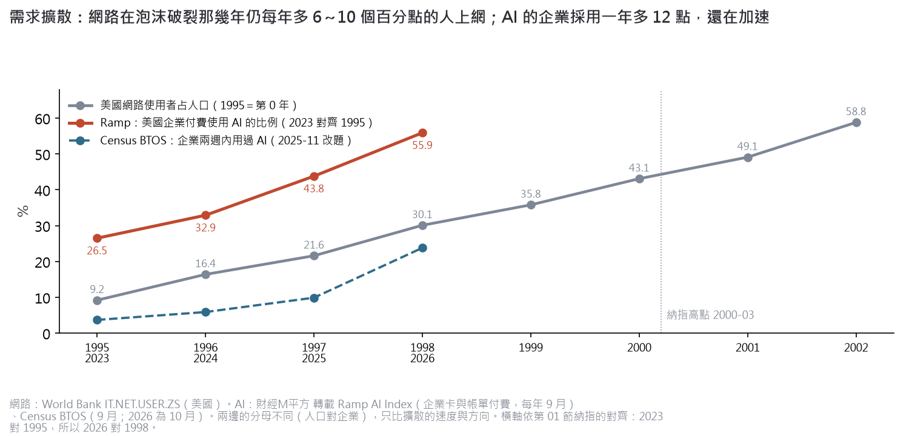
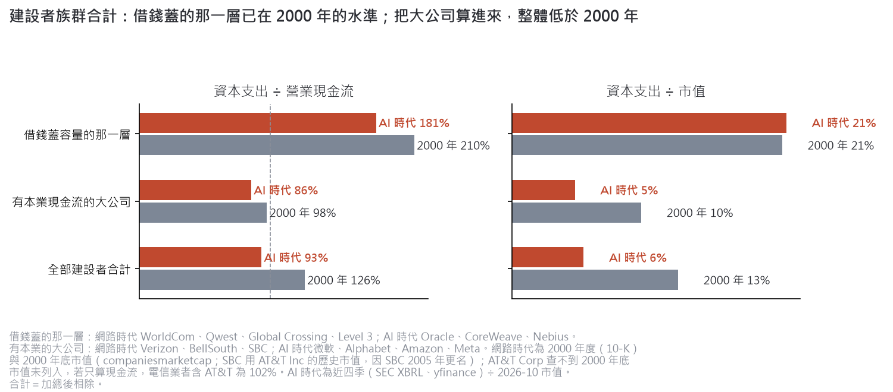
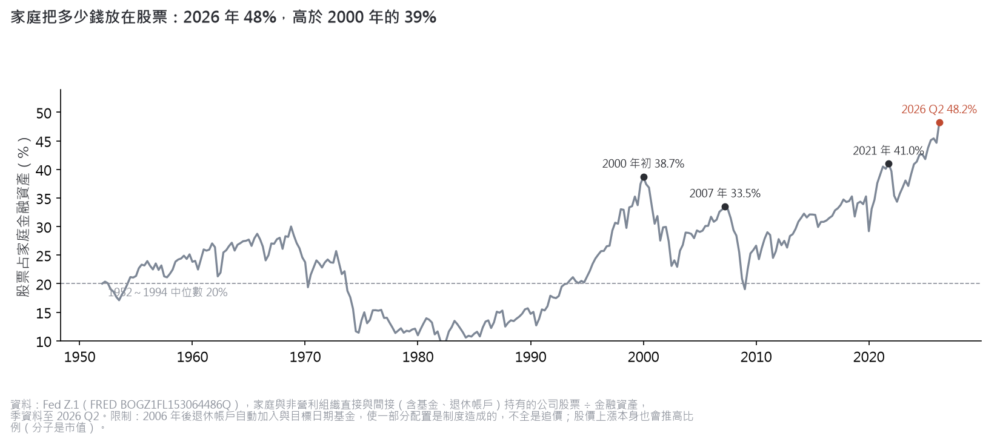
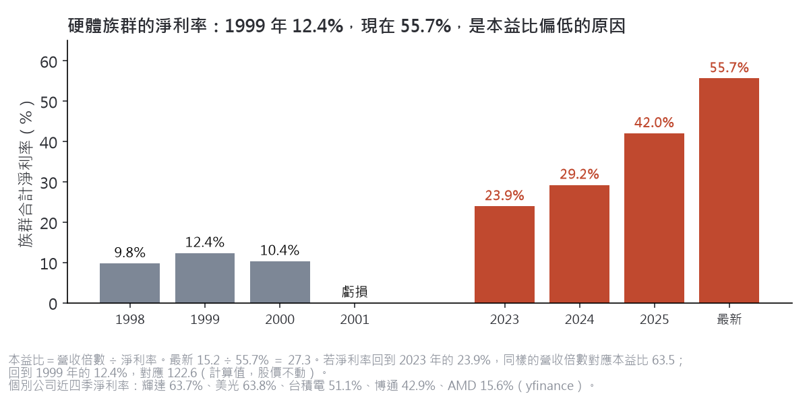
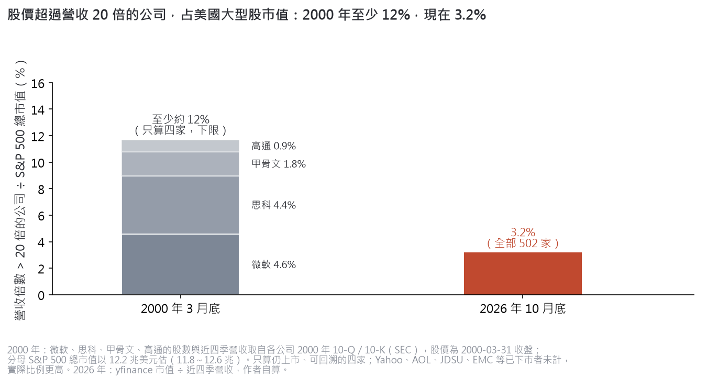

網路泡沫續篇。把泡沫拆成需求、燃料、參與、硬體、估值五層，逐層比 2000 年與 2026 年：哪些地方可以比、哪些不能比。
上一篇〈AI 會是下一個網路泡沫嗎？〉的結論是：問題收斂成「2027 年的盈餘成長能不能實現」。2000 年是估值的泡沫，2026 年是盈餘的依賴。這一篇往下拆：泡沫的本質到底是什麼。
結論：需求與硬體獲利比 2000 年紮實；燃料與參與的規模不輸當年，但形狀不同；為想像付錢的程度，遠低於 2000 年。
- 需求擴散比當年快。企業付費使用 AI 的比例一年多 12 個百分點、還在加速；網路當年每年多 6～10 點，而且在崩盤那三年也沒有慢下來。
- 燃料：上市公司的帳面健康，表外的規模到了 2007 年那一級。四大雲端的表外承諾約 2.4 兆美元、約占 GDP 7.3%；差別是大部分黏在付得起的 AA 級公司與長期資金上。付不起的那一小塊（高槓桿新雲）已經在被定價。
- 參與：廣度超過 2000 年，方式不同。家庭股票配置 48.2%（2000 年 38.7%），但融資餘額相對股市低於 2000 年。擁擠是退休帳戶與指數被動集中，不是借錢追新股。
- 硬體獲利比當年厚得多。族群淨利率 55.7%，1999 年 12.4%。它是收錢的一方，風險是盈餘跟著投資潮掉，不是估值。
- 估值：股價超過營收 20 倍的公司，2000 年至少占大型股市值 12%，現在 3.2%。
2000～2002 年那斯達克跌了近八成。同一段時間，美國上網人口占比每年還多 6～10 個百分點。需求是真的，錯在價格把十年後的需求先買完了。
我們對泡沫的定義：真實的新技術，加上容易理解的未來，再加上難以理解的金融創新。投資人過度外推，造成過度投資、擁擠交易、風險溢酬下降，最後相信價格會一直漲。
所以不能只問「需求在不在」，要分開量五層：
網路在泡沫破裂那三年，上網人口占比每年仍多 6～10 點，沒有變慢。AI 的企業付費採用一年多 12 點、還在加速。需求這一層，AI 不輸當年。但這也說明：需求成長從來不是泡沫不會破的理由。

▲ 網路：World Bank（美國上網人口占比）。AI：資料：財經M平方 轉載 Ramp（企業付費使用 AI，樣本偏科技導向的中小企業）、Census BTOS（全國抽樣，2025-11 改題）。分母不同（人口對企業），只比速度與方向。價格也不能用來區分兩個時代：網路頻寬在泡沫年每年跌 16～41%，破裂後 2003～2015 年仍每年跌 17～52%，是技術通縮的常態（DrPeering）。
只看上市公司的帳面：2000 年建設者整體花的比賺的多（資本支出是營業現金流的 126%）；現在整體在現金流以內（93%），因為四大雲端用自己的錢付了大部分。借錢建設那一層，投資強度和 2000 年一樣（資本支出 ÷ 市值都約 21%）。

▲ 借錢蓋那層：2000 年 WorldCom、Qwest、Global Crossing、Level 3；AI 時代 Oracle、CoreWeave、Nebius。有本業的大公司：2000 年地區電信；AI 時代四大雲端。2000 年各公司 10-K；AI 時代 SEC 近四季。2000 年用崩盤後的年底市值，分母已縮小，21.1% 是偏高的估計。
但這次「難以理解的金融創新」在表外。算進來，面積並不小：
| 燃料 | 占 GDP | 資金期限 |
|---|---|---|
| 2000 供應商融資 | 約 0.13% | 設備商自己出 |
| 2007 資產擔保商業本票 | 約 8.5% | 短期，會擠兌 |
| 2026 雲端表外承諾 | 約 7.3% | 長期資金 |
2026 年的 2.4 兆是四大雲端未生效的租約（約 9,040 億）加上晶片採購承諾（約 1.52 兆），債務人大部分是 AA 級公司。新形式的樣本是 Meta 的 Hyperion 專案公司：負債約占資產 90%、償債倍數 1.12，評等卻是 A+，因為靠的是 Meta 的租約與殘值保證，而這兩項生效前都不入 Meta 的資產負債表。
誰付帳單。2000 年簽光纖長約的新興電信，是拿創投和垃圾債的錢付「現在」的帳單。這次簽算力承諾的模型公司不一樣：Anthropic 2026 年上半年算力費用占營收 55%、營業現金流 ＋39 億美元，現在的帳單是客戶付的。但它的不可取消算力承諾約 2,656 億，是年化營收的 8 倍，那一段要靠營收繼續高成長與投資人的錢。
最弱的一環已經在被定價，整體反而很放心。CoreWeave 的五年期信用違約交換（CDS）超過 1,000 基點；Oracle 一筆 180 億美元的專案貸款賣不出去，報價 89～91 美分。但 Baa 公司債利差 1.46%，比 1997 年泡沫前還窄。1999～2000 年的信用市場其實比現在謹慎（利差 2.1～2.6%），沒警覺的是股市。這次的警覺集中在上次出事的那一類，風險溢酬最薄的是高評等的表外結構。
銀行與保險直接持有的部分吃不垮。壽險業 AI 相關投資 852 億美元，約為業界資本的 16%；大型銀行對 AI 相關產業的實際放款約占第一類資本 9%。要盯的是兩條管道：專案貸款賣不出去留在銀行表上（已有一筆），以及銀行借給私募信貸基金的錢。
金絲雀死了之後。新雲倒閉，產能不會消失，會打折轉手。若只是資金問題（情境 A，目前的跡象），使用者拿到更便宜的算力；若需求同時轉弱、每 token 成本下降比需求成長快（情境 B），舊世代 GPU 租金會崩，拖累所有以 GPU 為擔保的融資。分辨的指標是舊世代 GPU 的續租價加上使用率。
2000 年是散戶當沖、融資追新股。現在是退休帳戶與指數基金每月固定買進，自動集中到市值最大的公司。所以「擁擠交易」這次的形狀是指數集中度，不是融資；崩跌時被迫賣出的槓桿壓力，可能比 2000 年小。

▲ Fed Z.1（FRED BOGZ1FL153064486Q），家庭直接與間接（含基金、退休帳戶）持有的公司股票 ÷ 金融資產。2006 年後退休帳戶自動加入，一部分配置是制度造成的；股價上漲本身也會推高比例。
| 參與的量尺 | 2000 年 | 現在 |
|---|---|---|
| 家庭股票配置 | 38.7% | 48.2% |
| 前十大占 S&P 500 | 約 26～29% | 約 38～41% |
| 融資餘額 ÷ 股權市值 | 1.43% | 1.21% |
| IPO 市值 ÷ 股市 | 4.2～4.4% | 約 3% |
非泡沫年代的對照：家庭股票配置 1952～1994 年中位數 20%；融資餘額 1997 年以來中位數 1.19%。2026 年的 IPO 市值裡，SpaceX 一家就占 2.7 個百分點，扣掉後約 0.4%。前十大集中度各家算法不同（二手：JPMorgan、Mauboussin），前十大約賺指數盈餘的 32%，集中有一部分是盈餘集中。
硬體族群的營收倍數 15.2，已超過 1999 年的 12.1；本益比卻只有 27，因為本益比＝營收倍數 ÷ 淨利率。當年硬體股自己就是泡沫（1999 年族群本益比 98），現在硬體股是收錢的一方。

▲ 網路時代 8 家（思科、英特爾、Lucent、Nortel、EMC、JDSU、康寧、Sun，10-K）對 AI 時代 5 家（輝達、博通、AMD、美光、台積電，yfinance 近四季），加總後相除。反過來看風險：這個淨利率來自別人的資本支出；淨利率回到 2023 年的 24%，同樣的股價就是 63 倍本益比。美光淨利率 64% 是它歷史最高，剔除後族群本益比 31，結論不變。
前幾層量的是需求、資金與獲利；這一層量的才是泡沫本身：成交價格願意為想像付多少錢。

▲ 2000 年 3 月底，光是微軟（24.4 倍）、思科（35.8 倍）、甲骨文（22.8 倍）、高通（28.3 倍）四家，就合計占 S&P 500 市值約 12%。股數與近四季營收取自各公司 2000 年 10-Q、10-K（SEC），分母總市值以 12.2 兆美元估（11.8～12.6 兆）。只算仍上市、可回溯的四家；Yahoo、AOL、JDSU、EMC 等已下市者未計，實際比例更高。2026 年：S&P 500 全部 502 家，yfinance 市值 ÷ 近四季營收，作者自算。
新股市場也一樣：科技股 IPO 上市時的營收倍數中位數，1999 年 43 倍、2025 年 13.7 倍；IPO 首日平均漲幅，1999 年 71%、2025 年 29%（Jay Ritter）。連 2021 年那一波（17.8 倍、32%）都比現在熱。
五層各留一個最直接的訊號。門檻是作者設定的，沒有經過歷史回測。
| 訊號 | 現況 | 轉壞的樣子 |
|---|---|---|
| 營收倍數 20 倍占比 | 3.2% | 超過 10% |
| 雲端資本支出年增 | 仍在增加 | 低於 10% |
| CoreWeave CDS | 1,000 基點以上 | 延後付息或違約 |
| ANT 算力費用占營收 | 55% | 回升 |
| 舊世代 GPU 租金 | 跌、使用率高 | 跌且閒置增加 |
更短的心法、方法與盤感，我寫在粉專，入口在這裡：德克 mur mur 粉專。
資料與限制。
一手：Jay Ritter〈Initial Public Offerings: Updated Statistics〉（2026-10-05）、World Bank、FRED（含 Fed Z.1、Baa 利差、資產擔保商業本票）、FINRA 融資餘額、2000～2001 年各公司 10-Q 與 10-K、SEC XBRL、Anthropic S-1、SpaceX 10-Q（2026 年第三季）、Chicago Fed、Fed 金融穩定報告（2026-05）、NAIC。
學術：Van Nieuwerburgh〈Financing the AI Buildout〉（Brookings Papers on Economic Activity，2026-09 會議稿，引 WSJ、Moody's）。通訊社：Reuters（2026-09-18、10-15）。
第三方：Ramp、Census BTOS（經財經M平方）、yfinance、DrPeering、Moody's（經媒體轉述）、JPMorgan 與 Mauboussin（集中度）。
作者自算：2000 年與 2026 年營收倍數占比、IPO 市值占比、族群合計。
已知缺口：2000 年 3 月 S&P 500 總市值是估計值；2000 年供應商融資為二手、年份不精確；表外承諾各類互相重疊，不能加總；銀行借給私募信貸基金的錢裡 AI 占多少只能粗估。
本文只整理資料與推論，不是投資建議。
延伸閱讀：上一篇：AI 會是下一個網路泡沫嗎？ · Jay Ritter：IPO Statistics · Van Nieuwerburgh：Financing the AI Buildout · DrPeering：頻寬價格歷史
德克 mur mur｜研究整理，不構成任何投資建議。資料來源與限制見文末。